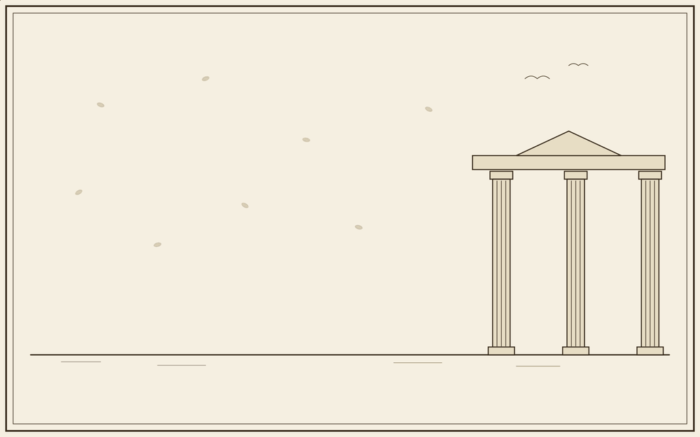
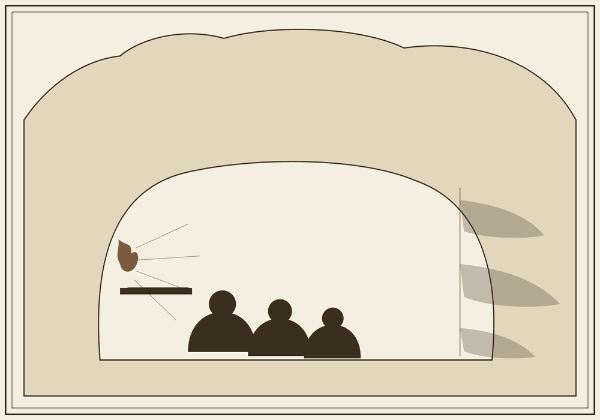
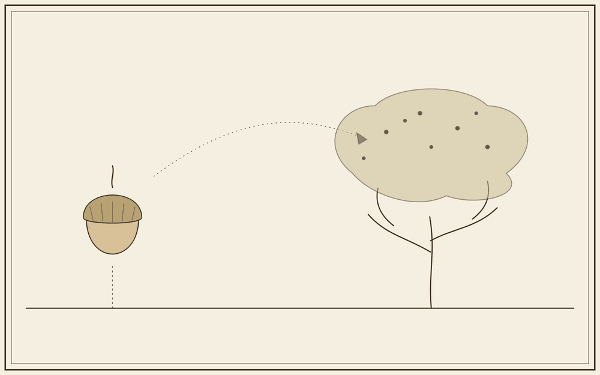
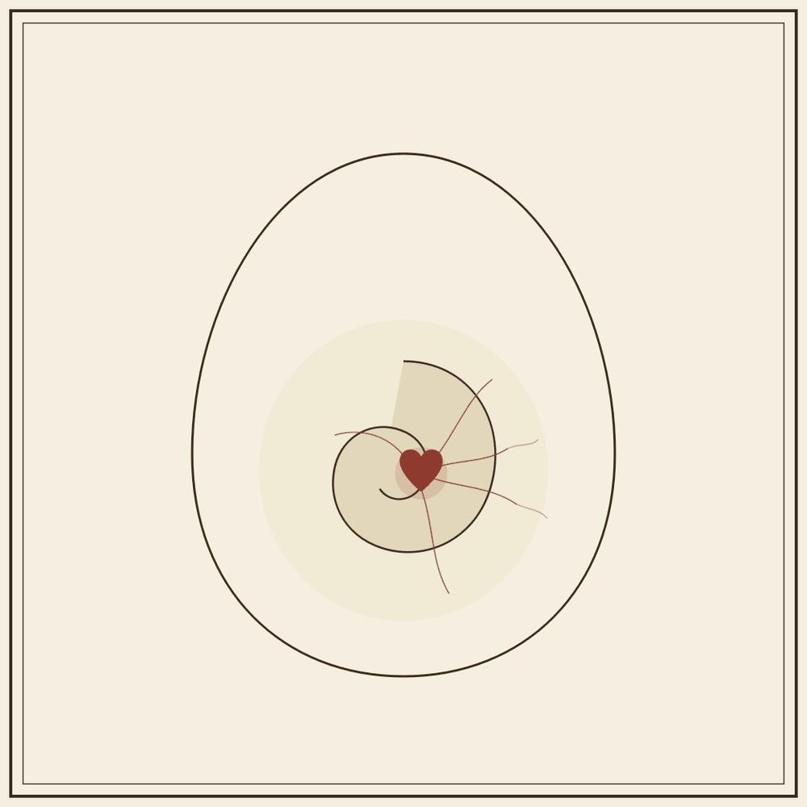
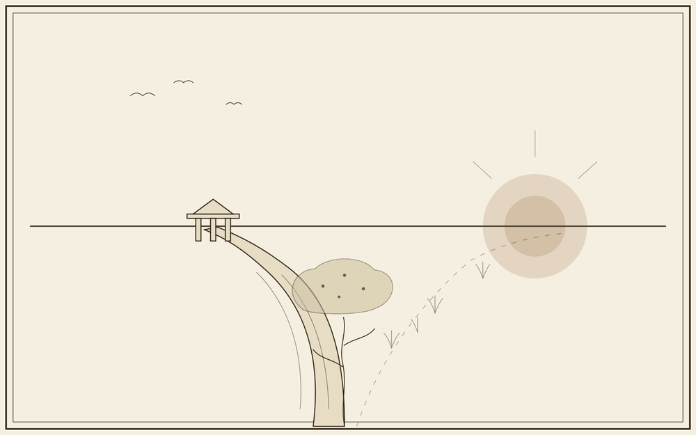

公元前三四七年，柏拉图死后第三天，三十七岁的亚里士多德坐在学园的橄榄林里，手里攥着一块旧蜡板。蜡面上刻着他一生画下的第一幅图：一条线，线上是一个完美的圆，线下是一个歪扭的、试图摹仿它的圆。他终于看清，那条线，是一道裂缝——而这道裂缝，是他和老师，用二十年时间，你一凿我一凿，一起凿开的。
柏拉图为了给「完美」觅一处不会被投票、被毒堇玷污的居所，把世界劈成两半：天上完美的形式，人间残缺的事物。亚里士多德不信天上还有另一个世界，他要把形式从天上拽回到每一棵会枯的树、每一具会死的血肉里；可为此，他不得不在每一样东西的心里，重新划下一刀，把「它是什么模样」从「它由什么做成」里剥离出来，并判形式为尊。他治好了天与地之间的一道伤，却在万物内部划开了另一道。
一生想把形式与血肉重新缝合的人，最后把它们剖得最干净。
这条新的裂缝，将在他晚年的逻辑里登峰造极——三段论以 A、B、C 抽空一切内容，只剩纯粹的形式在运转。而在全书的尾声，另一条路被掀开：在那条未曾走上的岔路上，显露、差异、牵系本是同一个活的动作，从不需要被割开。裂缝既然是我们划下的，便也能由我们，重新抹去。




